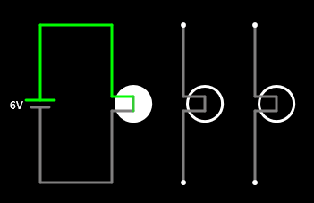
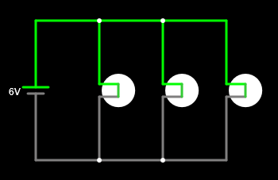
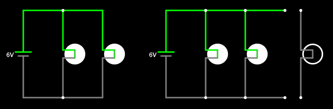

3. Conexión en paralelo¶
Dos componentes están conectados en paralelo si sus dos terminales están conectados entre sí, formando dos ramas.
La conexión en paralelo tiene la propiedad de mantener la misma tensión en todos sus componentes. Estos, además, son independientes. Si retiramos uno de los componentes en paralelo, los demás componentes seguirán funcionando igual que antes.
Generadores en paralelo¶
Los generadores en paralelo suman sus corrientes para poder entregar más corriente que uno solo.
Las pilas y baterías no se suelen conectar en paralelo porque apenas aporta ventajas y sí que puede presentar problemas si las tensiones de las pilas no son exactamente idénticas, al descargarse unas sobre otras. Para conseguir más corriente se utilizan pilas o baterías más grandes, en vez de utilizar pilas en paralelo.
Los generadores de las centrales eléctricas sí que se conectan en paralelo para poder generar mucha más corriente eléctrica de la que podría entregar un solo generador. Esta conexión es bastante delicada porque todos los generadores tienen que tener la misma tensión y funcionar al unísono. En caso contrario se producirán variaciones en la red eléctrica que podrían acabar en un apagón eléctrico.
Receptores en paralelo¶
Los receptores suelen conectarse en paralelo para que funcionen de manera independiente unos de otros. Así, las diferentes bombillas de una lámpara se conectarán en paralelo de manera que si una de ellas se funde o se retira, las demás bombillas seguirán funcionando igualmente.
Simula en el simulador online los siguientes circuitos con lámparas en paralelo para ver cómo afecta a la tensión de cada lámpara:

Nota
Los cables en una conexión en paralelo deben dibujarse poco a poco uniendo entre sí cada uno de los puntos de conexión:



Si ahora desconectamos una de las lámparas en paralelo, podemos comprobar cómo todo el resto del circuito sigue funcionando:

Ejercicios¶
- ¿Qué es un circuito en paralelo?
- ¿Qué propiedades tiene la conexión en paralelo?
- ¿Es común conectar las pilas en paralelo? Explica la respuesta.
- ¿Por qué se conectan los generadores de las centrales eléctricas en paralelo?
- Dibuja tres bombillas conectadas en paralelo a una pila.
- ¿Qué ocurre si se funde una lámpara que está conectada en paralelo con otras lámparas?